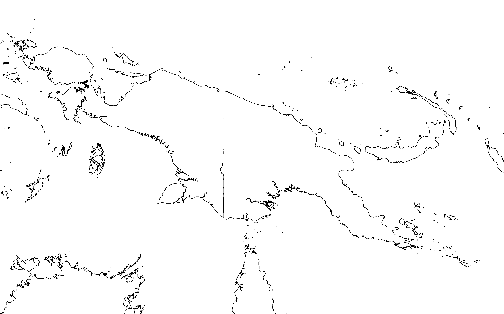
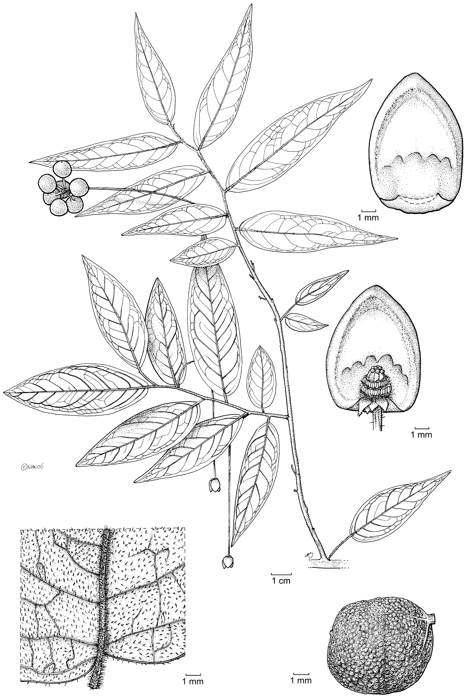

A new species, Miliusa lanceolata Chaowasku Keßler (Annonaceae), is described and illustrated.It has been so far recorded from the D’Entrecasteaux Islands (Goodenough and Normanby Islands) and Louisiade Archipelago (Sudest Island), southeast off Papua New Guinea and is characterized by densely hairy young twigs, lanceolate leaves, and supra-axillary flowers with long pedicels. The relationship with similar species in the genus is also discussed and a key to the species of Miliusa in New Guinea is provided.
Full text
Full text is available as a scanned copy of the original print version.
Get a printable copy (PDF file) of the
complete article, or click on a page image below to browse page by page.
Links are also available for
Selected References.
Images in this article

Map 1 Distribution of Miliusa lanceolata Chaowasku & Keßler.

Fig. 1 Miliusa lanceolata Chaowasku & Keßler. a. Habit; b. lower leaf surface; c. flower with two inner petals removed; d. inside of an inner petal; e. monocarp (all Brass 28198).